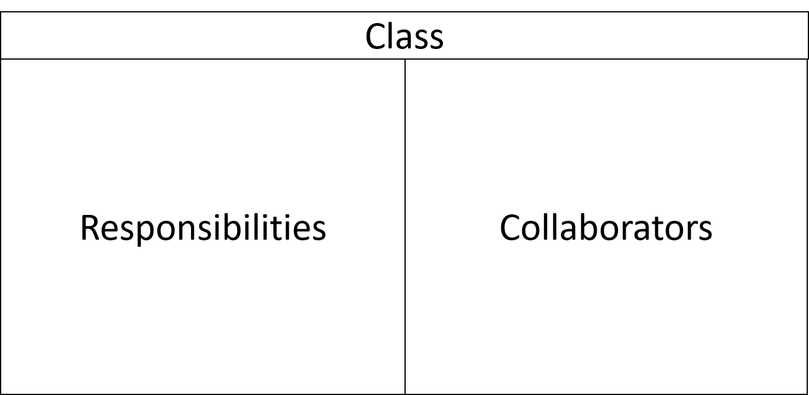

Design Heuristiken
- Wie finde ich Klassen -
Marcel Lüthi
Departement Mathematik und Informatik
Design Prozess
- Design ist ein kreativer Prozess
- Es gibt nur Guidelines, keine Rezepte
- Ein Design ist immer ein Kompromiss
- Elegante Lösung für einen use-case kann suboptimal für Gesamtsystem sein.
- Lösung wird nie perfekt sein.
Wie finde ich Klassen?
- Suche in Spezifikation/Beschreibung nach:
- Aktoren, Objekte, Rollen, Orte, Organisationen, Daten, Transaktionen,
Kollektionen von Dingen, Abläufen, Dinge die vom System manipuliert werden, etc.
- Noun Method: Krude Heuristik für erste Klassenkandidaten
- Klassen sind Substantive
- Methoden sind Verben
Einige Tips zum Design
- Fokus sollte auf Konzepten liegen, nicht Softwareklassen oder Daten
- Mit Teilmodell starten
- Nicht das ganze Problem auf einmal Lösen
- Inkrementell ausbauen / verbessern
- Prototyping
- Optimierunskriterien
- Trennung der Verantwortlichkeiten
- Reduzieren von Modulkopplung
- Verbessern der Kohäsion
CRC Karten
- Hilfreiche Methode um Klassen zu definieren
- Erlaubt Brainstorming in Gruppen

K. Beck, W. Cunningham.
A Laboratory for Teaching Object-Oriented
Thinking".
In Conference Proceedings on Object-Oriented Programming Systems, Languages and Applications (OOPSLA ’89), ACM, pp. 1-6.
CRC Karten: Klassenname
- Beschreibt die Klasse
- Sollte einfach sein
- Nicht Person die Vorlesung besucht sondern Student
CRC Karten: Responsibility
- Alles was eine Klasse weiss or tut
- Student hat Attribute wie Namen, Adresse
- Kann sich für Prfüfung einschreiben, Zeugnis verlangen
Eine Klasse kann nur eigene Attribute ändern, aber nicht die von
Fremden Klassen. Zusammenarbeit ist gefragt.
CRC Karten: Collaborators
- Beispiel: Klasse Student kann das Seminar nicht alleine buchen, sondern nur mithilfe von der Klasse Seminar
- Zwei Formen von Verantwortlichkeiten
- Informationen erlangen
- Aktion auslösen
Arbeiten mit CRC Karten
- Start mit nur 3-5 Klassen
- Verantwortlichkeiten finden
- Kollaboratoren definieren
- Karten (örtlich) mit Kollaboratoren anordnen.
CRC Karten und Designqualität
- Zu viele Verantwortlichkeiten sind Anzeichen für schwache Kohäsion
- Jede Klasse sollte max 3-4 Verantwortlichkeiten haben
- Oder nur eine wegen Single Responsibility Principle?
- Viele Kollaboratoren: Hoher Fan Out und hoher Kopplungsgrad